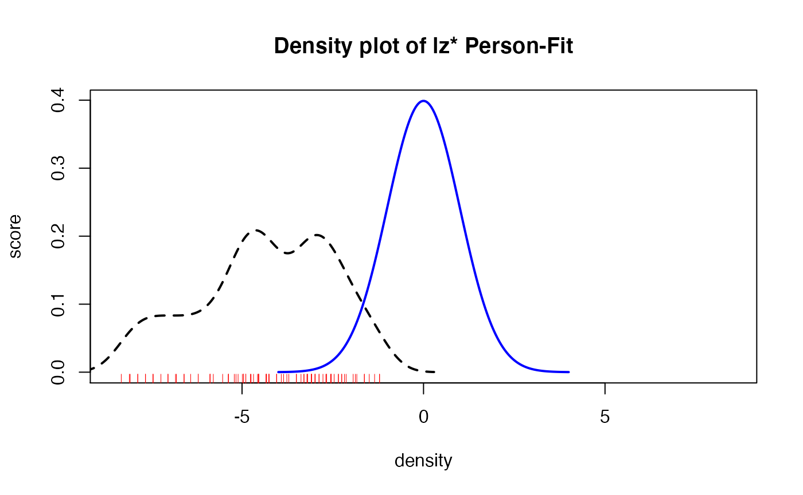
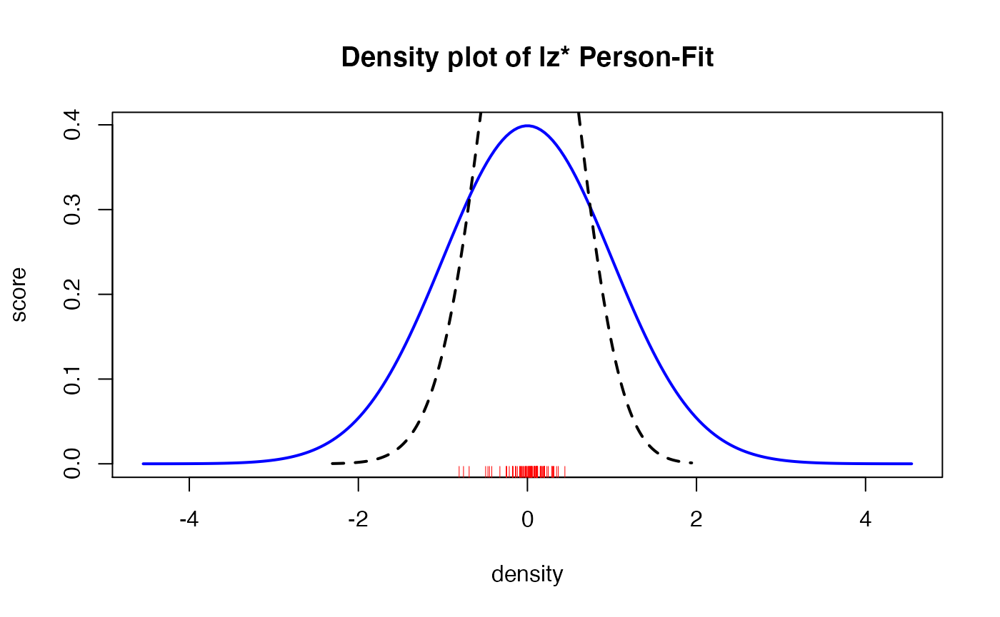

Getting started with Person-Fit functions
A brief introduction of all currently implemented person-fit functions will be added soon. Currently the LZ, LZ* and also the Infit-Outfit-Statistics are implemented. We also added the Infit-Outfit-Functions for the Partial-Credit Model. Meanwhile we are working on plots for a better understanding of the person misfit as well as on inference statistic methods.
First example
Now a simple example will be given. First, we will simulate some data for our hands on example:
library(PP)
suppressWarnings(RNGversion("3.5.0"))
set.seed(1337)
# simulate some intercepts
diffpar <- seq(-3,3,length=15)
# simulate some slope parameters
sl <- round(runif(15,0.5,1.5),2)
la <- round(runif(15,0,0.25),2)
ua <- round(runif(15,0.8,1),2)
# simulate response matrix (not following any IRT model)
awm <- matrix(sample(0:1,100*15,replace=TRUE),ncol=15)We will start with a simple 1PL-Model. First, we have to estimate the person parameters. Here we have to choose an estimation method. It is important, that you can choose mle, wle or map only for the LZ and LZ* Index. For the Infit-Outfit statistic we support mle and wle estimates.
# MLE
res1plmle <- PP_4pl(respm = awm,thres = diffpar,type = "mle")
# WLE
res1plwle <- PP_4pl(respm = awm,thres = diffpar,type = "wle")We also support the 2PL, 3PL and 4PL Model:
# ------------------------------------------------------------------------
## 2PL model #####
# ------------------------------------------------------------------------
# MLE
res2plmle <- PP_4pl(respm = awm,thres = diffpar, slopes = sl,type = "mle")
# WLE
res2plwle <- PP_4pl(respm = awm,thres = diffpar, slopes = sl,type = "wle")
# ------------------------------------------------------------------------
## 3PL model #####
# ------------------------------------------------------------------------
# MLE
res3plmle <- PP_4pl(respm = awm,thres = diffpar,
slopes = sl,lowerA = la,type = "mle")
# WLE
res3plwle <- PP_4pl(respm = awm,thres = diffpar,
slopes = sl,lowerA = la,type = "wle")
# ------------------------------------------------------------------------
## 4PL model #####
# ------------------------------------------------------------------------
# MLE
res4plmle <- PP_4pl(respm = awm,thres = diffpar,
slopes = sl,lowerA = la,upperA=ua,type = "mle")
# WLE
res4plwle <- PP_4pl(respm = awm,thres = diffpar,
slopes = sl,lowerA = la,upperA=ua,type = "wle")After the estimation of the person parameter we are able to calculate the person fits. At this point you are able to calculate only one kind of personfit as well as all various simultaneously (as shown next).
# ------------------------------------------------------------------------
## 1PL model #####
# ------------------------------------------------------------------------
## LZ*-Index #####
pfit1pl_lz <- Pfit(respm=awm,pp=res1plwle,fitindices="lzstar")
## LZ*-Index combined with Infit-Outfit #####
pfit1pl_li <- Pfit(respm=awm,pp=res1plwle,fitindices=c("lzstar","infit","outfit"))
# ------------------------------------------------------------------------
## 2PL model #####
# ------------------------------------------------------------------------
## LZ*-Index #####
pfit2pl_lz <- Pfit(respm=awm,pp=res2plwle,fitindices="lzstar")
## LZ*-Index combined with Infit-Outfit #####
pfit2pl_li <- Pfit(respm=awm,pp=res2plwle,fitindices=c("lzstar","infit","outfit"))
# ------------------------------------------------------------------------
## 3PL model #####
# ------------------------------------------------------------------------
## LZ*-Index #####
pfit3pl_lz <- Pfit(respm=awm,pp=res3plwle,fitindices="lzstar")
## LZ*-Index combined with Infit-Outfit #####
pfit3pl_li <- Pfit(respm=awm,pp=res3plwle,fitindices=c("lzstar","infit","outfit"))
# ------------------------------------------------------------------------
## 4PL model #####
# ------------------------------------------------------------------------
## LZ*-Index #####
pfit4pl_lz <- Pfit(respm=awm,pp=res4plwle,fitindices="lzstar")
## LZ*-Index combined with Infit-Outfit #####
pfit4pl_li <- Pfit(respm=awm,pp=res4plwle,fitindices=c("lzstar","infit","outfit"))We can also use different person parameter estimates.
# ------------------------------------------------------------------------
## 1PL model #####
# ------------------------------------------------------------------------
## LZ*-Index #####
## mle ####
pfit1pl_mle_l <- Pfit(respm=awm,pp=res1plmle,fitindices="lzstar")
## wle ####
pfit1pl_wle_l <- Pfit(respm=awm,pp=res1plwle,fitindices="lzstar")If desired you can simply plot the results of the person-fit statistics as shown below.
# eine Grafik erzeugen
res.pp <- Pfit(respm=awm,pp=res1plmle,fitindices=c("lzstar"),SE=TRUE)
x<-seq(-4,4,length=200)
s <- 1
mu <- 0
y <- (1/(s*sqrt(2*pi))) * exp(-((x-mu)^2)/(2*s^2))
plot(x,y, type="l", lwd=2, col = "blue", xlim = c(-8.5,8.5),xlab="", ylab="")
title(main="Density plot of lz* Person-Fit", xlab="density", ylab="score")
lines(density(res.pp$lzstar[,"lzstar"], bw = 0.5), lwd = 2, lty = 2)
rug(res.pp$lzstar[,"lzstar"],col="red")
# zweite Grafik erzeugen
x <- 1:nrow(res.pp$lzstar)
avg <- res.pp$lzstar[,"lzstar"]
sdev <- res.pp$lzstar[,"lzs_se"]
plot(avg, x,
xlim=range(c(avg-sdev, avg+sdev)),
pch=19, ylab="Person", xlab="Person-Fit +/- SD",
main="Plot of Person-Fit with SE"
)
arrows(avg-sdev, x, avg+sdev, length=0.05, angle=90, code=3)
abline(v=0,col = "red", lwd = 3)
Real data example
First we have to load the dataset
data(pp_amt)
betas <- pp_amt$betas$Itemparameter
diffpar <- pp_amt$Itemparameter
# slope parameters
awm <- pp_amt$daten_amt[,grep("i\\d{1,3}",colnames(pp_amt$daten_amt))]
# estimate ability parameter and personfit
# the computation of the standard error takes a while, therefore we use only a part of the provided data
suppressWarnings(RNGversion("3.5.0"))
set.seed(1800)
# sample items
sampi <- order(sample(1:ncol(awm),40,replace = F))
# sample persons
sampp <- order(sample(1:nrow(awm),100,replace = F))
awm.samp <- awm[sampp,sampi]
# apply(awm.samp, 2, function(x)!all(is.na(x)))
awm.samp <- awm.samp[apply(awm.samp, 1, function(x)!all(is.na(x))),] #only persons with no NA
out <- PPass(respdf = awm.samp,thres = betas[sampi], items="all",type = "wle",
mod=c("1PL"), fitindices= c("lz","lzstar","infit","outfit"),SE=TRUE)
# first example of illustration
lim <- max(abs(c(min(out$estimate),max(out$estimate))))
x <- seq(-lim,lim,length=200)
s <- 1
mu <- 0
y <- (1/(s*sqrt(2*pi))) * exp(-((x-mu)^2)/(2*s^2))
plot(x,y, type="l", lwd=2, col = "blue", xlim = c(-lim,lim),xlab="", ylab="")
title(main="Density plot of lz* Person-Fit", xlab="density", ylab="score")
lines(density(out[,"lzstar"], bw = 0.5), lwd = 2, lty = 2)
rug(out[,"lzstar"],col="red")
# second example of illustration
x <- 1:nrow(out)
avg <- out[,"lzstar"]
sdev <- out[,"lzs_se"]
plot(avg, x,
yaxt="n",
xlim=range(c(avg-sdev, avg+sdev)),
pch=19, ylab="Person", xlab="Person-Fit +/- SD",
main="Plot of Person-Fit with SE"
)
axis(side=2, at = c(1:nrow(out)),labels = c(1:nrow(out)), las = 2,cex.axis=0.66)
arrows(avg-sdev, x, avg+sdev, length=0.05, angle=90, code=3)
abline(v=0,col = "red", lwd = 3)Interpretation of some selected person-fit statistics.
In the second example we used the provided real dataset of the ‘Adaptive Matrices Test’. Theses data where collected at the Unitersity of Vienna, Fakulty of Psychology, Division of Psychological Assessment and Applied Psychometrics. In the second plot we used only a subset of the provided data, because the computation of the standard error (here we used a jackknife (Efron & Stein, 1981)) takes a while. Magis, Raîche & Béland (2012) and also Armstrong, Stoumbos, Kung and Shi (2007) provide useful information for the inrepretation of the lz (Drasgow, Levine & Williams, 1985) and lz* (Snijders, 2001) person-fit index. The interpretation of the lz-values is very simple. The smaller (negative) the values, the stronger the indicated misfit. The lz-values ar asymptotically standard normally distributed. Molenaar and Hoijtink (1990) (and others) showed, that the asymptotically standard normal distrubution only holds, if the \(\theta\) values are known. To overcome thes problem Snijders (2001) intruduced his lz* person-fit index. The inrepration of this index does not change. In summary Magis, Raîche & Béland (2012) propose if the lz* index is lower than a certain critical value \(z_\alpha\), than this person-fit value indicates a misfit.
References
Armstrong, R.D., Z.G. Stoumbos, M.T. Kung, and M. Shi. 2007. On the Performance of the Lz Person-Fit Statistic. Practical Assessment, Research & Evaluation, 12(16).
Drasgow, F., M.V. Levine, and E.A. Williams. 1985. Appropriateness Measurement with Polychotomous Item Response Models and Standardized Indices. British Journal of Mathematical and Statistical Psychology, 38(1). Wiley Online Library: 67-86.
Efron, B., and C. Stein. 1981. The Jackknife Estimate of Variance. The Annals of Statistics JSTOR, 586-96.
Magis, D., G. Raîche, and S. Béland. 2012. A Didactic Presentation of Snijders’s Lz* Index of Person Fit with Emphasis on Response Model Selection and Ability Estimation Journal of Educational and Behavioral Statistics, 37(1). SAGE Publications Sage CA: Los Angeles, CA: 57-81.
Molenaar, I.W., and H. Hoijtink. 1990. The Many Null Distributions of Person Fit Indices. Psychometrika, 55(1). Springer: 75-106.
Snijders, T.AB. 2001. Asymptotic Null Distribution of Person Fit Statistics with Estimated Person Parameter. Psychometrika}, 66(3). Springer: 331-342.
Snijders, T.B. 2001. Asymptotic Null Distribution of Person Fit Statistics with Estimated Person Parameter. Rasch Measurement Transactions, 66(3): 331-342.